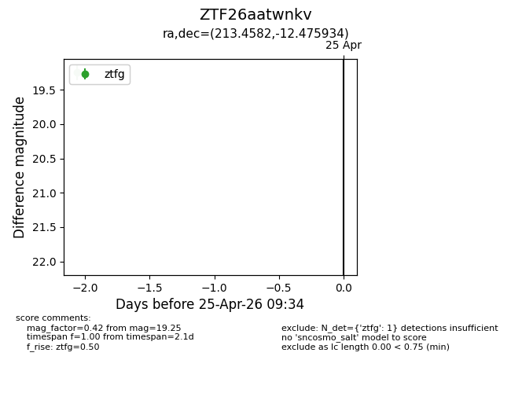
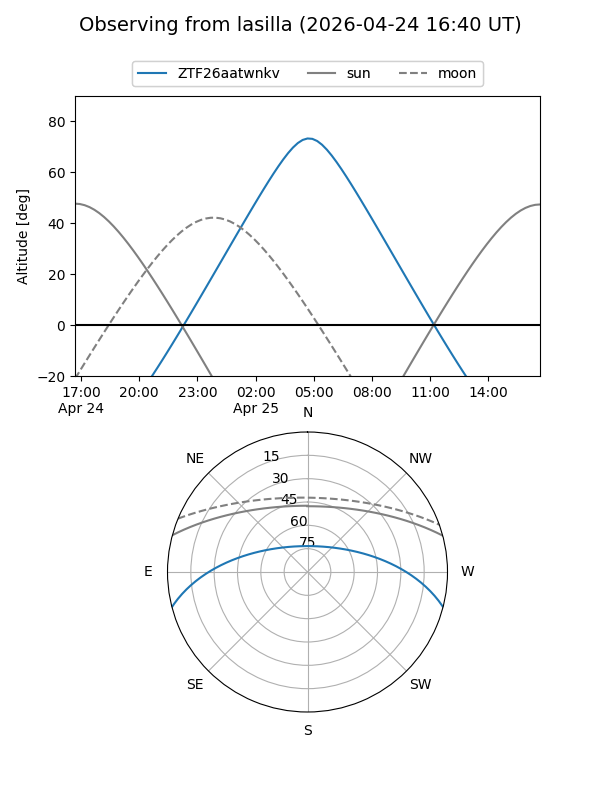
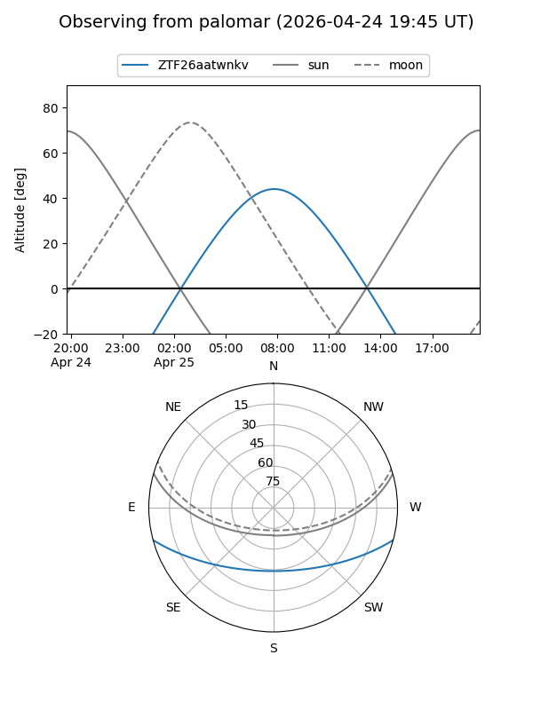

ZTF26aatwnkv
Target ZTF26aatwnkv at 2026-04-25 09:35
Aliases and brokers:
FINK: link
Lasair: link
ALeRCE: link
alt names
ZTF26aatwnkv (ztf,fink_ztf)
Coordinates:
equatorial (ra, dec) = 213.4582,-12.47593
equatorial (HMS+DMS) = 14:13:49.98,-12:28:33.36
galactic (l, b) = (332.3570,+45.63589)
Flags:
Photometry:
last ztfg=19.25
1 ztfg detections
Lightcurve

Visibility


Additional plots